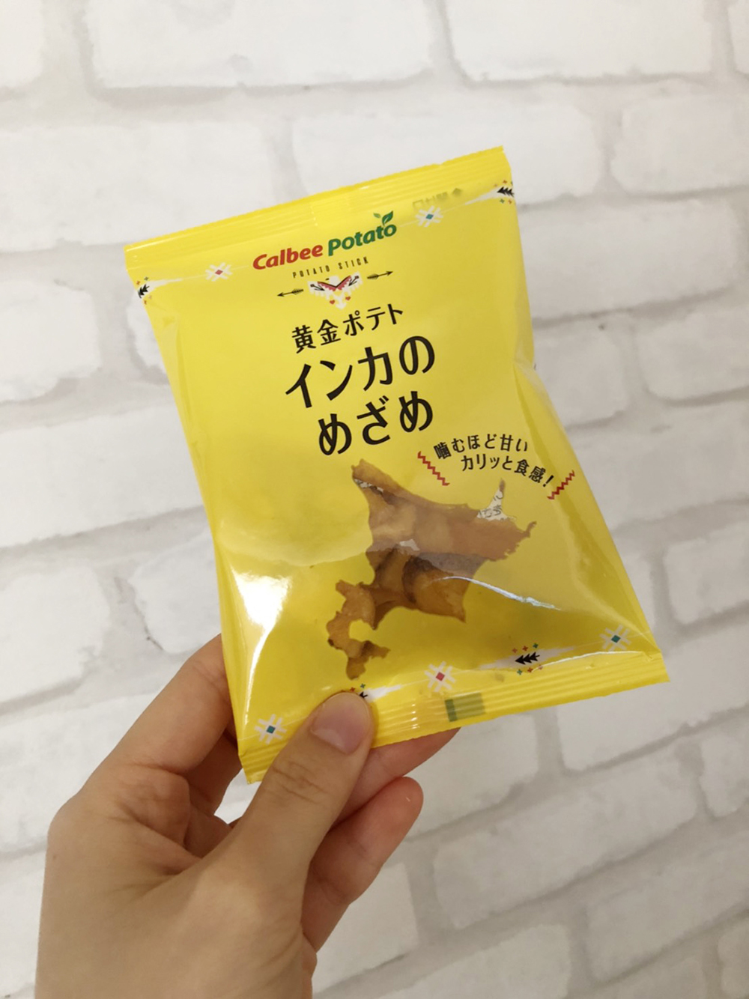

北海道の洋菓子-2
攝於知床五湖
赤いサイロ
自從2018年的冬季奧運後，赤いサイロ在日本的人氣爆發。相信日本通的大家都知道，2018年冬季奧運的日本冰球女子代表隊的もぐもぐタイム（直翻：吃點心時間），而這款赤いサイロ便是選手們吃的點心之一。當時選手們的吃相被現場直播，全日本為此而瘋狂，從此赤いサイロ變成日本人去北海道必尋找的土產之一喔！

說這麼多，赤いサイロ究竟是什麼咧？答案就是—乳酪蛋糕。

函館著名的乳酪蛋糕不同，赤いサイロ不走綿密路線，反而是重視乳酪的味道，也因此怎麼吃都不會膩喔！
いつか来た道

いつか来た道跟前述的霜だたみ有著同樣的構造。

不同的是，霜だたみ是卡布奇諾餡，而這款いつか来た道的內餡是融合蜂蜜與マルメロ（譯：榲桲，是希臘傳說中引起紛爭的金蘋果），吃起來甜帶微酸，非常獨特。
インカのめざめ
日本洋芋片界的王者Calbee在北海道推出的這款インカのめざめ，是選用高級的馬鈴薯インカのめざめ而製成的。


インカのめざめ和風靡全台的薯條三兄弟一樣是分成一包一包的，這樣就不用擔心吃不完放軟掉囉！再來，最重要的是口感。インカのめざめ一進口中，就跟薯條三兄弟一樣好吃，唯獨不同的是，這款インカのめざめ會在你咬下去之後，散發出微微的甜味。這種甜味完全不會感到奇怪，反而會越吃越上癮喔！
ご覧いただきありがとうございました!